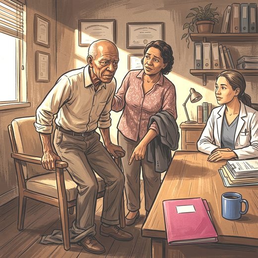

Consulta rápida à beira do leito
Condutas, doses e interações.
Referências da aula · 9
- Compston JE, McClung MR, Leslie WD. Osteoporosis. Lancet. 2019;393(10169):364-76. PMID 30696576. doi:10.1016/S0140-6736(18)32112-3.PubMedDOI
- Cruz-Jentoft AJ, Sayer AA. Sarcopenia. Lancet. 2019;393(10191):2636-46. PMID 31171417. doi:10.1016/S0140-6736(19)31138-9.PubMedDOI
- Cruz-Jentoft AJ, Bahat G, Bauer J, Boirie Y, Bruyère O, Cederholm T, et al. Sarcopenia: revised European consensus on definition and diagnosis. Age Ageing. 2019;48(1):16-31. PMID 30312372. doi:10.1093/ageing/afy169.PubMedDOI
- Kirk B, Cawthon PM, Arai H, Ávila-Funes JA, Barazzoni R, Bhasin S, et al. The conceptual definition of sarcopenia: Delphi consensus from the Global Leadership Initiative in Sarcopenia (GLIS). Age Ageing. 2024;53(3):afae052. PMID 38520141. doi:10.1093/ageing/afae052.PubMedDOI
- Larsson L, Degens H, Li M, Salviati L, Lee YI, Thompson W, et al. Sarcopenia: aging-related loss of muscle mass and function. Physiol Rev. 2019;99(1):427-511. PMID 30427277. doi:10.1152/physrev.00061.2017.PubMedDOI
- Goodpaster BH, Park SW, Harris TB, Kritchevsky SB, Nevitt M, Schwartz AV, et al. The loss of skeletal muscle strength, mass, and quality in older adults: the Health, Aging and Body Composition Study. J Gerontol A Biol Sci Med Sci. 2006;61(10):1059-64. PMID 17077199. doi:10.1093/gerona/61.10.1059.PubMedDOI
- Khosla S, Hofbauer LC. Osteoporosis treatment: recent developments and ongoing challenges. Lancet Diabetes Endocrinol. 2017;5(11):898-907. PMID 28689769. doi:10.1016/S2213-8587(17)30188-2.PubMedDOI
- Hirschfeld HP, Kinsella R, Duque G. Osteosarcopenia: where bone, muscle, and fat collide. Osteoporos Int. 2017;28(10):2781-90. PMID 28733716. doi:10.1007/s00198-017-4151-8.PubMedDOI
- Kirk B, Zanker J, Duque G. Osteosarcopenia: epidemiology, diagnosis, and treatment: facts and numbers. J Cachexia Sarcopenia Muscle. 2020;11(3):609-18. PMID 32202056. doi:10.1002/jcsm.12567.PubMedDOI
Documentos oficiais
Leis e publicações do Ministério da Saúde sobre o cuidado da pessoa idosa, de acesso livre.
Abrir os documentos